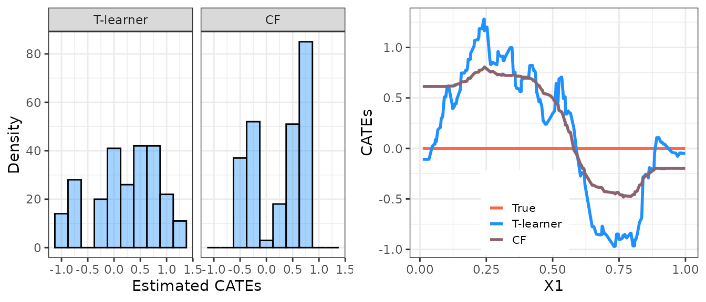
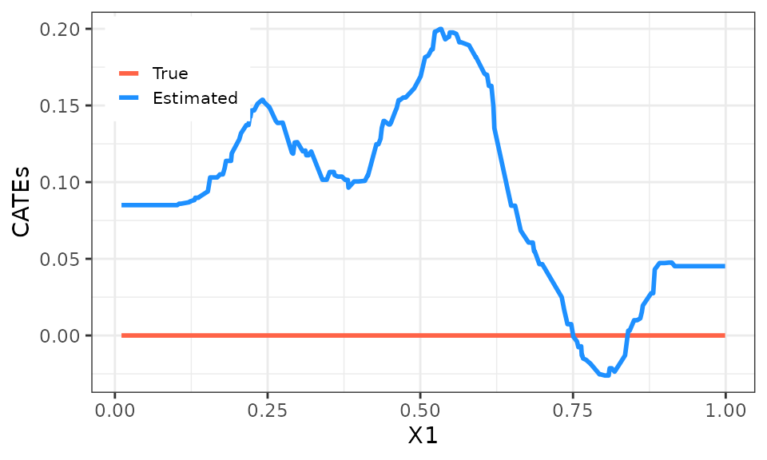
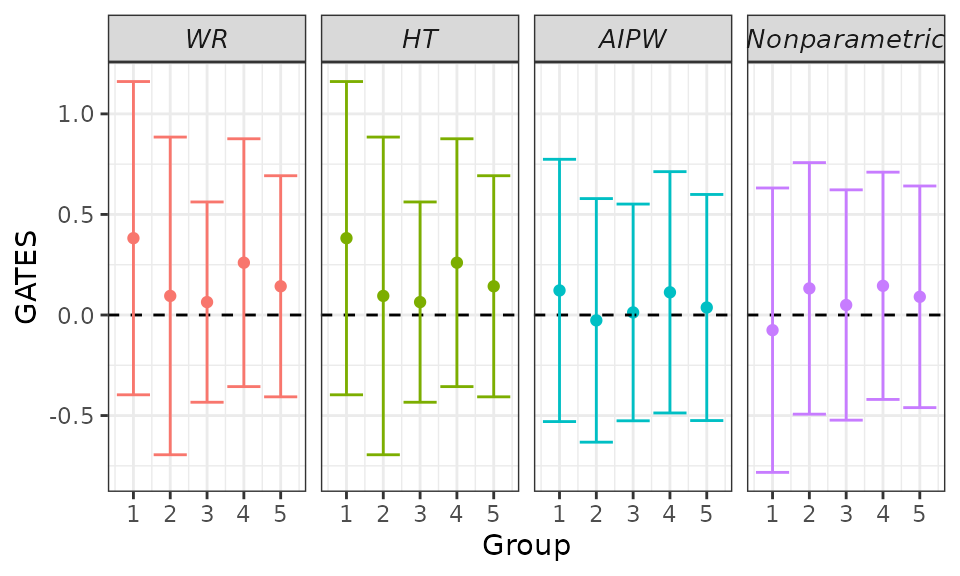
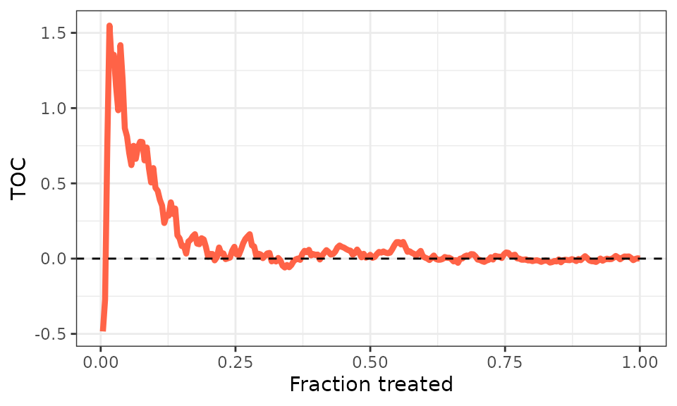

evaluCATE-short-tutorial.RmdIn this tutorial, we show how to use the evaluCATE
package to evaluate your conditional average treatment effect (CATE)
estimates. Before diving in the technical details, we need to define
notation:
Throughout the rest of the tutorial, we assume SUTVA and unconfoundedness (e.g., Imbens and Rubin, 2015).
We illustrate the usage of the evaluCATE package with
simulated data:
\(X_{i} \sim \mathcal{U} ( 0, 1 )\) single uniformly distributed covariate
\(D_i \sim Bernoulli(1/2)\) randomly assigned treatment
\(Y_i = X_i + 0 \times D_i + \varepsilon_i\) with \(\varepsilon_i \sim \mathcal{N} ( 0, 1 )\)
This implies a homogeneous zero effect, i.e. \(\tau ( X_i ) = 0\)
## Generate data.
set.seed(1986)
n <- 500
k <- 1
X <- matrix(runif(n * k), ncol = k)
colnames(X) <- paste0("x", seq_len(k))
D <- rbinom(n, size = 1, prob = 0.5)
mu0 <- X[, 1]
mu1 <- X[, 1]
Y <- mu0 + D * (mu1 - mu0) + rnorm(n)We now proceed to estimate the CATEs using the causal forest estimator. We divide our data set into two subsamples:
a training sample for estimation of CATEs, and
a validation sample to evaluate the estimated heterogeneity.
## Sample split.
train_idx <- sample(c(TRUE, FALSE), length(Y), replace = TRUE)
X_tr <- matrix(X[train_idx, ])
X_val <- matrix(X[!train_idx, ])
D_tr <- D[train_idx]
D_val <- D[!train_idx]
Y_tr <- Y[train_idx]
Y_val <- Y[!train_idx]
## CATEs estimation.
forest <- causal_forest(X_tr, Y_tr, D_tr) # We use only the training sample.
forest_predictions <- predict(forest, X, estimate.variance = TRUE) # We predict on the full sample.
cates <- forest_predictions$predictions
se <- sqrt(forest_predictions$variance.estimates)We then display the out-of-sample estimated CATEs distribution:
## Plot out-of-sample predicted CATEs.
data.frame("cates" = cates[!train_idx]) %>%
ggplot(aes(x = cates)) +
geom_histogram(color = "black", fill = "dodgerblue", alpha = 0.4, bins = 10) +
xlab("Estimated CATEs") + ylab("Density") +
theme_bw() +
theme(plot.title = element_text(hjust = 0.5), legend.position = "none")
One could look at the histogram and conclude that there is heterogeneity in the treatment effects. However, high variation in the predictions does not necessarily imply that the effects are heterogeneous, as it could be that estimation noise is messing with our results (exactly what is happening in our example!). These complications arise because applying machine learning tools to the estimation of heterogeneous treatment effects may produce low-quality estimates of the CATEs, as shown in the next figure where we overlay the true and the estimated CATEs.
## Plot true and estimated CATEs.
data.frame("x1" = X, "true_cates" = mu1 - mu0, "estimated_cates" = cates) %>%
melt(id.vars = "x1") %>%
ggplot(aes(x = x1, y = value, group = variable, color = variable)) +
geom_line(linewidth = 1) +
scale_color_manual(name = "", labels = c("True", "Estimated"), values = c("tomato", "dodgerblue")) +
xlab("X1") + ylab("CATEs") +
theme_bw() +
theme(plot.title = element_text(hjust = 0.5), legend.position = c(0.13, 0.85), legend.text = element_text(size = 8), legend.key.size = unit(0.4, 'cm'))
It is thus crucial to rely on appropriate procedures to evaluate the
quality of the estimated CATEs and assess whether systematic
heterogeneity is detected. This is the purpose of the
evaluCATE package.
The quality evaluation of the estimated CATEs is performed by targeting three key features of the CATEs:
This section provides an overview of these targets. The discussion is loosely based on Chernozhukov et al. (2017), Yadlowsky et al. (2021), and Imai and Li (2022).1
The BLP of the actual CATEs using the estimated CATEs is defined as follows:
\[ BLP [\tau ( X_i ) | \hat{\tau} ( X_i )] := \beta_1 + \beta_2 [ \hat{\tau} ( X_i ) - \mathbb{E} [ \hat{\tau} ( X_i ) ] ]\]
with \(\beta_1 = \mathbb{E} [ \tau ( X_i ) ]\) and \(\beta_2 = Cov [ \tau ( X_i ), \hat{\tau} ( X_i ) ] / Var [ \hat{\tau} ( X_i ) ] = E\left[\frac{\hat{\tau} ( X_i )- E[\hat{\tau} ( X_i )]}{Var [ \hat{\tau} ( X_i ) ]} \tau ( X_i ) \right]\).
We are interested in the estimation of the BLP for two main reasons:
The evaluCATE package estimates the BLP using three
different strategies, each involving fitting a suitable regression
model.3
To achieve valid inference, we require a training-validation sample
split, as we did in the Motivating Example section. Then, estimation of
the BLP is performed in the validation sample.4 We consider three
alternatives to estimate BLP:
\[ Y_i = \beta_1 [ D_i - p ( X_i ) ] + \beta_2 \{ [ D_i - p ( X_i ) ] [ \hat{\tau} ( X_i ) - \mathbb{E}_n [ \hat{\tau} ( X_i ) ] ] \} + \epsilon_i \] with the model fitted via WLS using weights \(w ( X_i)\) and \(\mathbb{E}_n\) denoting the sample average operator.
The GATES are defined as follows:
\[ \gamma_k := \mathbb{E} [ \tau ( X_i ) | \hat{\ell}_{k - 1} \leq \hat{\tau} ( X_i ) < \hat{\ell}_k ], \,\,\, k = 1, \dots, K\]
with the groups formed by cutting the distribution of \(\hat{\tau} ( \cdot )\) into \(K\) bins using the empirical quantiles of \(\hat{\tau} ( \cdot )\) \(\{ \hat{\ell}_k \}_{k = 1}^K\).
We are interested in the estimation of the GATES for two main reasons:
The evaluCATE package estimates the GATES using four
different strategies: three of them involve fitting a suitable linear
model, while the fourth hinges on a nonparametric estimator. To achieve
valid inference, we require a training-validation sample split, as we
did in the Motivating Example section. Then, estimation of the GATES is
performed using only the validation sample.5 We consider four
alternatives to estimate GATES:
\[ Y_i = \sum_{k = 1}^K \gamma_k [ D_i - p ( X_i ) ] \mathbb{1} ( \hat{\ell}_{k - 1} \leq \hat{\tau} ( X_i ) < \hat{\ell}_k ) + \epsilon_i \]
with the model fitted via WLS using weights \(w ( X_i)\).
\[ H_i Y_i = \sum_{k = 1}^K \gamma_k \mathbb{1} ( \hat{\ell}_{k - 1} \leq \hat{\tau} ( X_i ) < \hat{\ell}_k ) + \epsilon_i \]
with the model fitted via OLS.
\[ \hat{\Gamma}_i = \sum_{k = 1}^K \gamma_k \mathbb{1} ( \hat{\ell}_{k - 1} \leq \hat{\tau} ( X_i ) < \hat{\ell}_k ) + \epsilon_i \]
with the model fitted via OLS and the doubly-robust scores \(\Gamma_i\) estimated via cross-fitting in the validation sample.
\[ \hat{\gamma}_k = \frac{K}{\sum_{i = 1}^n D_i} \sum_{i = 1}^n Y_i D_i \mathbb{1} ( \hat{\ell}_{k - 1} \leq \hat{\tau} ( X_i ) < \hat{\ell}_k ) - \frac{K}{\sum_{i = 1}^n [ 1 - D_i ]} \sum_{i = 1}^n Y_i [ 1 - D_i ] \mathbb{1} ( \hat{\ell}_{k - 1} \leq \hat{\tau} ( X_i ) < \hat{\ell}_k ) \]
The RATE induced by the estimated CATEs is defined as follows:
\[ \theta_{\alpha} ( \hat{\tau} ) := \int_0^1 \alpha ( u ) TOC ( u; \hat{\tau} ) d u \] where:
\[ TOC (u; \hat{\tau}) := \mathbb{E} [ Y_i ( 1 ) - Y_i ( 0 ) | F ( \hat{\tau} ( X_i ) \geq 1 - u) ] - \mathbb{E} [ Y_i ( 1 ) - Y_i ( 0 ) ] \] with \(F ( \cdot )\) the cumulative distribution function of \(\hat{\tau} ( \cdot )\), \(0 < u \leq 1\), and \(\alpha : ( 0, 1 ] \rightarrow \mathcal{R}\) a generic weight function.
The RATE provides a measure of the ability of our estimated CATEs to prioritize units to treatment in terms of intervention benefit. The idea is to regard \(\hat{\tau} ( \cdot )\) as a “prioritization rule” that sorts units \(i = 1, ..., n\) in order \(j = 1, ..., n\) according to their estimated CATEs, for instance by prioritizing units with the largest estimated CATEs.6 7
We are interested in the estimation of the RATE for two reasons:
The evaluCATE package estimates the TOCs and the RATE
using the following sample-averaging estimators:
\[ \widehat{TOC} ( u; \hat{\tau} ) = \frac{1}{ \lfloor u n \rfloor } \sum_{j = 1}^{\lfloor u n \rfloor} \hat{\Gamma}_{i ( j )} - \frac{1}{n} \sum_{i = 1}^n \hat{\Gamma}_i \] \[ \hat{\theta}_{\alpha} ( \hat{\tau} ) = \frac{1}{n} \sum_{j = 1}^n \alpha ( \frac{j}{n} ) \widehat{TOC} ( \frac{j}{n}; \hat{\tau} ) \] where we let \(i ( j )\) be the mapping from rank \(j\) to unit \(i\) (e.g., \(i ( 1 )\) returns the most-prioritized unit, and \(i ( n )\) returns the least-prioritized unit) and the doubly-robust scores \(\Gamma_i\) are estimated via cross-fitting in the validation sample. Two different weight functions are considered, each corresponding to a different RATE:
The half-sample bootstrap procedure is used to estimate the standard error of \(\hat{\theta}_{\alpha} ( \cdot )\). In particular, the standard deviation of the bootstrap estimates can be used as an estimator of the standard error of \(\hat{\theta}_{\alpha} ( \cdot )\).
The BLP, GATES, and RATEs can be estimated by calling the
evalu_cates function. When calling this function, we need
to supply the full sample using the first three arguments:
Y, D, and X, corresponding to
\(Y_i\), \(D_i\), and \(X_i\). Additionally, we must supply our
CATE predictions on the full sample \(\hat{\tau} ( X_i )\) obtained using only
the training sample by using the cates argument. Finally,
we must supply a logical vector with the TRUEs denoting
those observations used to estimate the CATEs by using the
is_train argument, so that the evalu_cates
function knows which observations must be used to post-process our CATEs
estimates.
We also have four optional arguments that we can use to supply estimates of the nuisance functions \(p ( \cdot )\), \(\mu ( \cdot )\), \(\mu_0 ( \cdot )\), and \(\mu_1 ( \cdot )\). Be careful, as these estimates must be obtained using only the training sample. If not provided by the user, these functions are estimated internally via honest regression forests using only the training sample. In our Motivating Example, we have knowledge of the actual propensity score, which equals \(0.5\) for all units. We supply these values in the call below and let the function estimate the other nuisances internally.9
Finally, we have four additional optional arguments. The first of
these arguments controls the number of groups to be formed for the GATES
analysis, with the default number equal to five. The second of these
arguments controls the number of bootstrap replications used to estimate
the standard error of the estimated RATEs. The third of these arguments
controls how to rank units for the RATE estimation (according to either
increasing or decreasing values of the estimated CATEs). The fourth of
these arguments controls whether the evalu_cates function
should print the status of progress on the console. We use the default
of 5 groups, 200 bootstrap replications, the treatment is considered to
be beneficial, and we prevent the function from printing the
progresses.
## Call main function.
pscore <- rep(0.5, length(Y)) # True propensity scores.
evaluation <- evaluCATE(Y, D, X, cates, train_idx, pscore = pscore, verbose = FALSE)Let us have a look at the results. The summary method
allows us to visualize the results of the BLP and RATE estimation if the
target argument is set to BLP or the results
of the GATES estimation if the target argument is set to
GATES. The latex argument controls whether the
raw results or LATEX code for a table will be displayed in the
console.
## BLP summary.
summary(evaluation, target = "BLP") # Try 'latex = TRUE'.
#> BLP and RATEs results
#>
#> Estimated ATE + 95% confidence intervals:
#> wr_none : 0.18 [-0.104, 0.457]
#> wr_cddf1: 0.08 [-0.168, 0.324]
#> wr_cddf2: 0.07 [-0.175, 0.313]
#> wr_mck1 : 0.08 [-0.169, 0.330]
#> ht_none : 0.18 [-0.104, 0.457]
#> ht_cddf1: 0.08 [-0.168, 0.324]
#> ht_cddf2: 0.07 [-0.175, 0.313]
#> ht_mck1 : 0.07 [-0.171, 0.321]
#> ht_mck2 : 0.07 [-0.175, 0.315]
#> ht_mck3 : 0.06 [-0.184, 0.310]
#> aipw : 0.04 [-0.212, 0.302]
#>
#> Estimated HET + 95% confidence intervals:
#> wr_none : 0.27 [-4.626, 5.166]
#> wr_cddf1: 0.34 [-3.711, 4.392]
#> wr_cddf2: 0.73 [-3.295, 4.747]
#> wr_mck1 : 0.24 [-3.944, 4.423]
#> ht_none : 0.27 [-4.626, 5.166]
#> ht_cddf1: 0.34 [-3.711, 4.392]
#> ht_cddf2: 0.73 [-3.295, 4.747]
#> ht_mck1 : 0.25 [-3.835, 4.333]
#> ht_mck2 : 0.54 [-3.496, 4.573]
#> ht_mck3 : 0.00 [-4.126, 4.125]
#> aipw : 0.97 [-3.257, 5.203]
#>
#> RATEs results + 95% confidence intervals:
#> AUTOC: 0.13 [-0.118, 0.387]
#> QINI: 0.02 [-0.059, 0.098]The estimated ATEs range between \(0.05\) and \(0.18\), with all confidence intervals
covering the true value computed as mean(mu1 - mu0).
Additionally, we always fail to reject the hypothesis \(\beta_2 = 0\), implying that either the
effects are homogeneous or our CATE estimates are unreliable (we know
both to be true in our example). The estimated RATEs agree with these
findings.
## GATES summary.
summary(evaluation, target = "GATES") # Try 'latex = TRUE'.
#> GATES results
#>
#> Estimated GATES + 95% confidence intervals:
#> wr_none :
#> Group 1 0.38 [-0.401, 1.165]
#> Group 2 0.09 [-0.699, 0.889]
#> Group 3 0.06 [-0.436, 0.565]
#> Group 4 0.26 [-0.359, 0.879]
#> Group 5 0.14 [-0.410, 0.695]
#> wr_cddf1:
#> Group 1 0.15 [-0.464, 0.762]
#> Group 2 0.01 [-0.547, 0.572]
#> Group 3 0.06 [-0.428, 0.544]
#> Group 4 0.23 [-0.367, 0.837]
#> Group 5 -0.04 [-0.569, 0.480]
#> wr_cddf2:
#> Group 1 0.14 [-0.486, 0.767]
#> Group 2 0.00 [-0.546, 0.547]
#> Group 3 0.04 [-0.453, 0.531]
#> Group 4 0.15 [-0.442, 0.749]
#> Group 5 0.04 [-0.476, 0.551]
#> wr_mck1 :
#> Group 1 0.18 [-0.452, 0.815]
#> Group 2 0.01 [-0.576, 0.600]
#> Group 3 0.04 [-0.443, 0.531]
#> Group 4 0.21 [-0.395, 0.813]
#> Group 5 -0.02 [-0.548, 0.514]
#> ht_none :
#> Group 1 0.38 [-0.401, 1.165]
#> Group 2 0.09 [-0.699, 0.889]
#> Group 3 0.06 [-0.436, 0.565]
#> Group 4 0.26 [-0.359, 0.879]
#> Group 5 0.14 [-0.410, 0.695]
#> ht_cddf1:
#> Group 1 0.15 [-0.464, 0.762]
#> Group 2 0.01 [-0.547, 0.572]
#> Group 3 0.06 [-0.428, 0.544]
#> Group 4 0.23 [-0.367, 0.837]
#> Group 5 -0.04 [-0.569, 0.480]
#> ht_cddf2:
#> Group 1 0.14 [-0.486, 0.767]
#> Group 2 0.00 [-0.546, 0.547]
#> Group 3 0.04 [-0.453, 0.531]
#> Group 4 0.15 [-0.442, 0.749]
#> Group 5 0.04 [-0.476, 0.551]
#> ht_mck1 :
#> Group 1 0.16 [-0.462, 0.772]
#> Group 2 0.01 [-0.547, 0.574]
#> Group 3 0.05 [-0.434, 0.540]
#> Group 4 0.22 [-0.380, 0.829]
#> Group 5 -0.05 [-0.573, 0.476]
#> ht_mck2 :
#> Group 1 0.13 [-0.483, 0.753]
#> Group 2 0.03 [-0.525, 0.582]
#> Group 3 0.02 [-0.472, 0.513]
#> Group 4 0.21 [-0.387, 0.803]
#> Group 5 -0.01 [-0.527, 0.512]
#> ht_mck3 :
#> Group 1 0.18 [-0.438, 0.807]
#> Group 2 0.01 [-0.562, 0.580]
#> Group 3 0.02 [-0.469, 0.511]
#> Group 4 0.17 [-0.426, 0.759]
#> Group 5 -0.03 [-0.563, 0.498]
#> aipw :
#> Group 1 0.13 [-0.518, 0.771]
#> Group 2 -0.13 [-0.735, 0.482]
#> Group 3 0.01 [-0.508, 0.525]
#> Group 4 0.15 [-0.458, 0.757]
#> Group 5 0.07 [-0.468, 0.598]
#> Group 5 0.09 [-0.459, 0.639]
#>
#> Hypotheses testing results (p-values):
#> wr_none :
#> GATES_1 = GATES_2 = ... = GATES_K : 0.965
#> GATES_5 = GATES_1 : 0.623
#> wr_cddf1:
#> GATES_1 = GATES_2 = ... = GATES_K : 0.965
#> GATES_5 = GATES_1 : 0.637
#> wr_cddf2:
#> GATES_1 = GATES_2 = ... = GATES_K : 0.994
#> GATES_5 = GATES_1 : 0.802
#> wr_mck1 :
#> GATES_1 = GATES_2 = ... = GATES_K : 0.976
#> GATES_5 = GATES_1 : 0.639
#> ht_none :
#> GATES_1 = GATES_2 = ... = GATES_K : 0.965
#> GATES_5 = GATES_1 : 0.623
#> ht_cddf1:
#> GATES_1 = GATES_2 = ... = GATES_K : 0.965
#> GATES_5 = GATES_1 : 0.637
#> ht_cddf2:
#> GATES_1 = GATES_2 = ... = GATES_K : 0.994
#> GATES_5 = GATES_1 : 0.802
#> ht_mck1 :
#> GATES_1 = GATES_2 = ... = GATES_K : 0.966
#> GATES_5 = GATES_1 : 0.621
#> ht_mck2 :
#> GATES_1 = GATES_2 = ... = GATES_K : 0.982
#> GATES_5 = GATES_1 : 0.728
#> ht_mck3 :
#> GATES_1 = GATES_2 = ... = GATES_K : 0.978
#> GATES_5 = GATES_1 : 0.603
#> aipw :
#> GATES_1 = GATES_2 = ... = GATES_K : 0.972
#> GATES_5 = GATES_1 : 0.886
#> imai_li :
#> GATES_1 = GATES_2 = ... = GATES_K : 0.998
#> GATES_5 = GATES_1 : NAAll the GATES confidence intervals include the zero, suggesting that
no group is affected by the treatment (true in our example!). The \(p\)-values attached to testing the
hypotheses that all the GATES are equal and that the most affected and
the least affected groups feature the same response to the treatment are
large and lead to a failure in rejecting these hypotheses. To better
digest GATES point estimates and confidence intervals, we can use the
plot method setting the target argument to
"GATES".
## GATES plot.
plot(evaluation, target = "GATES")
Finally, we can look at the estimated TOC curve by calling the
plot method setting the target argument to
"TOC".
## TOC curve.
plot(evaluation, target = "TOC")
Complete references to these papers are listed in the home page.↩︎
Failing to reject this hypothesis means that either there is no heterogeneity or our CATE estimates are not reliable. Without additional evidence, we are not able to disentangle this. Check the hypotheses testing vignette for more details.↩︎
The linear regressions are used for estimation purposes. The identification hinges on linear projections defined at the population level, with the linear regressions constituting their sample analogs.↩︎
Additional constructed covariates which are not necessary for identifying the targets but can significantly reduce the variance of the estimation can be included in the regressions. Details can be found in the denoising vignette.↩︎
See footnotes 3 and 4.↩︎
If the treatment is harmful, we prioritize units with the lowest estimated CATEs.↩︎
Prioritization rules can be derived from other approaches, e.g., risk-based rules. Here we focus on CATE-based rules as we aim to use the RATEs to evaluate the quality of our estimated CATEs.↩︎
See footnote 2.↩︎
Notice that most methodologies implemented here are valid only under randomized experiments, where \(p ( \cdot )\) is known.↩︎